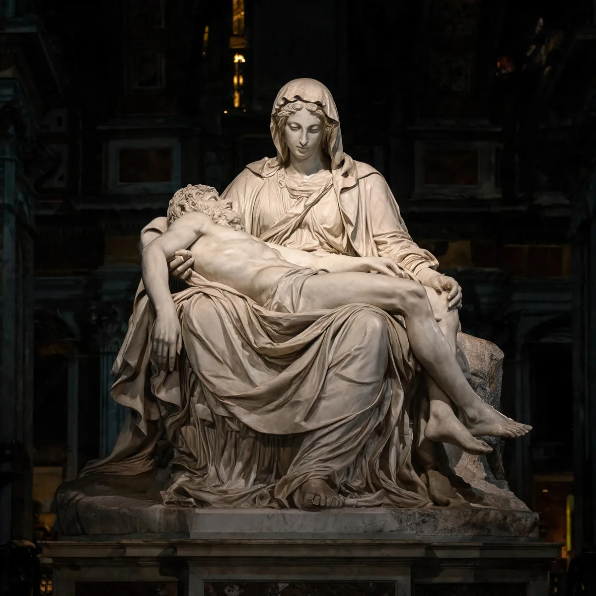

代表作品 · Masterworks

大卫
文艺复兴最著名的雕塑，以完美的人体比例和深刻的心理刻画，成为人类艺术史上不可逾越的巅峰。原本放置在佛罗伦萨市政厅前，现藏于学院美术馆。

创世记 · 西斯廷穹顶
独自一人仰面在 20 米高的脚手架上完成。含 300 多个人物，核心场景《创造亚当》中上帝与亚当手指相接的瞬间，成为人类美术史上被引用最多的图像。

哀悼基督
23 岁的处女作。圣母怀抱被钉死的耶稣，面部却异常年轻——米开朗琪罗解释：纯洁使人永葆青春。唯一署名的作品（圣母衣带上刻有自己的名字）。